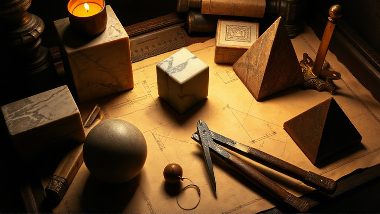
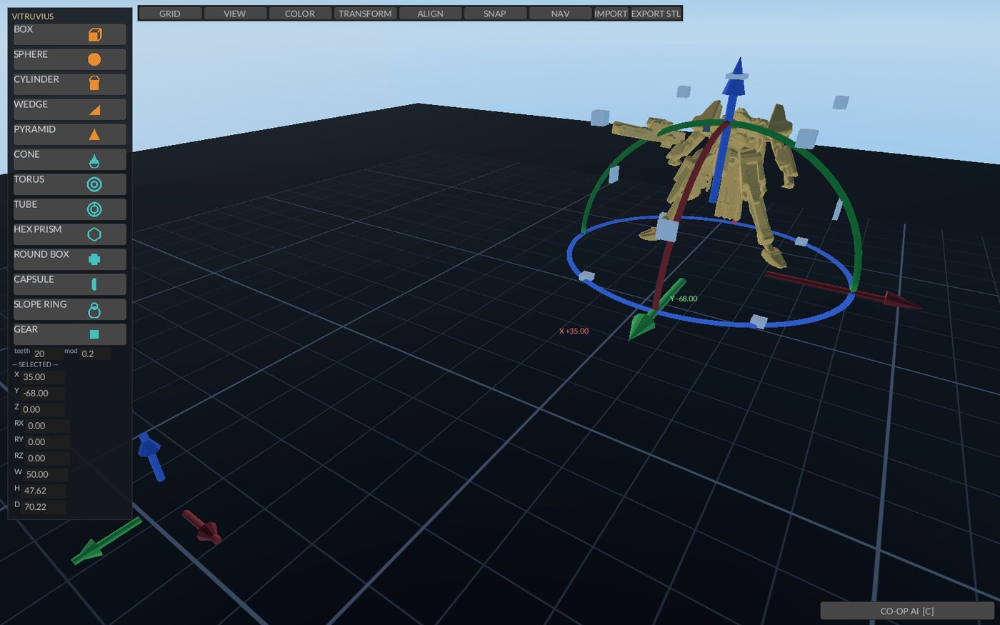

Structor was the Roman architect and engineer whose De architectura is the oldest surviving work on the discipline — the book that gave design its three tests: firmitas, utilitas, venustas — soundness, usefulness, beauty. A CAD module that exists to design real parts for a real shop takes the name of the man who first wrote down what a design owes the person who builds from it.
CAD, sovereign. Solids in, drawings out.

cargo build --release
target/release/structorClick a palette button (top-left) — BOX / SPHERE / CYLINDER / WEDGE /
PYRAMID — to drop a solid on the plate. Left-drag moves it; rings
rotate; grab the bounding-box handles to scale (corners = uniform, faces
= one axis). Ctrl+B bakes the scene to STL.
Ctrl+S saves a .SigN file.
Structor is the design module of the Leviathan Design Suite: a sovereign, local-first CAD program in Rust on fyrox. It is a TinkerCAD replacement — drop primitive solids on a build plate, drag/rotate/scale them with gizmos, mark negatives as holes, group and boolean-merge, then bake the scene through OpenSCAD to a watertight STL. No browser, no cloud, no account. Everything runs on the local machine; the only network calls are optional AI requests to LLM endpoints on the operator's own cluster.
The scene is a tree of shapes that maps 1:1 onto a JSON-CSG grammar,
so a saved .SigN file is a readable spec, not an opaque
blob. Boolean preview and merge use the manifold engine — the same
backend OpenSCAD uses — so what you preview is what the bake produces.
An AI CO-OP pane can edit the scene from plain-language instructions or
write raw OpenSCAD for complex parts, but the deterministic
hand-modeling path never depends on it.
Formerly named SigNature; renamed 2026-08-09 when the suite was
chartered. The binary is target/release/structor. 84
in-crate tests (cargo test); the camera/spacemouse canon
tests live in the Chimaera crate.
.SigN.SIG_IMPORT=<path> at
launch; meshes are welded, normalized, and grab-editable; imported-mesh
W/H/D live in the inspector and rescale uniformly.signature.export event to
~/XOS/.timeline-events.jsonl..SigN
(JSON-CSG: units, solids, colors, pins);
SIG_OPEN=<path> loads at launch.out/ anchored to the repo.edit_solid scene edits, a
<SCAD> escape hatch where the model writes stock
OpenSCAD for complex parts (one self-repair round on compile errors),
SPEC build mode (≤2 clarifying questions → parameter sheet →
go confirms), a count register that cross-checks requested
quantities against the compiled program, and a VLM judge that renders
the part and rules on shape class (advisory; JUDGE FAIL triggers one
repair round). Honest note: the AI lane needs a
configured LLM endpoint (SIG_LLM_URL, default the GPU
host's nemotron shim) and its reliability work is still open — the
AI-assist claim is deliberately OFF the public page until it holds.~/.config/signature/nav.json, edited live in the NAV
panel.Place and edit solids. Click a palette button; the part lands on a free grid cell. Click to select (repeat-click cycles overlapping parts). Left-drag moves on the workplane with grid + surface snap; arrows nudge by the grid step (Shift ×5, Ctrl+Shift+Up/Down raises/lowers). Type exact values in the left inspector; Enter commits. Drag a ring to rotate (compass shows the snapped angle; ROT° box in TOOLS applies typed degrees). Drag a corner handle for uniform scale, a face handle for one axis — it grows toward you, Esc puts everything back. T opens the TOOLS panel: GRID step, TRANSFORM (scale/rotate ±90°/mirror), ALIGN, SNAP, colors, backdrops.
Booleans. Select a part, press H to mark it a hole. P previews the cut without committing. Select the hole plus its solids and Ctrl+G to apply the boolean — the result is one merged, still-editable part; Ctrl+U brings the sources back. Ctrl+W welds any multi-selection into one part in a single stroke.
Save and bake. Ctrl+S saves .SigN to
out/. Ctrl+B bakes: watch the CO-OP status line for
...Baking → BAKE OK; the STL, receipt, and
thumbnail land in out/. EXPORT STL in the toolbar opens a
save dialog for shipping the mesh elsewhere.
Navigate. Right-drag or left-drag empty space =
orbit. Middle-drag = pan (the scene follows the cursor). Wheel = zoom
(scroll up backs the camera away). WASD pans the view. Home (or H with
nothing selected) = home view. With the SpaceMouse: tilt = fly,
push/pull = lift, twist = yaw. Hold Shift for the
attitude layer — tilt L/R = roll, tilt F/B = pitch, fly gated off. Hold
L-Alt to boost fly speed (SIG_FLY_BOOST,
default 6×). Left puck button = home.
The NAV panel. If any axis feels backwards, don't
relaunch with env flips — open the NAV panel and fix it there:
per-function sign flips, gesture-source reassignment, puck sensitivity,
fly speed, and the mouse feel block (orbit/zoom/ pan sens + direction).
Every click writes ~/.config/signature/nav.json. Load
order: baked default ← nav.json ← SIG_* env (env wins, as
launch trim).
The CO-OP pane. Edge tab or C opens it; drag the
left grab bar to resize. Type an instruction and Enter: plain edits go
through edit_solid (the model sees the whole spec plus a
MESHES ON PLATE block); complex parts come back as
<SCAD> programs, compiled and dropped on the plate.
Toggle SPEC for the spec-build round: answer its ≤2 questions, review
the parameter sheet, go builds, cancel/Esc
aborts. The DEBUG feed (newest first) is copyable with Ctrl+C. Every AI
part gets a COUNT check and an advisory judge verdict on the status
line. UNITS toggles mm/in for the sheet.
../Chimaera, path dep) — the
camera, interaction-math, and spacemouse crate. Nav canon tests live
there; edit viewport feel THERE.~/.config/signature/nav.json is shared with Ouranos (the
Buck Dome window) — one feel file across the suite; the shared
mouse block carries orbit/zoom/pan sens and direction.out/;
downstream Leviathan modules (Jove, GilgaMESH, Labyrinth) take STL as
input.signature.export events to
~/XOS/.timeline-events.jsonl for the operator surface's
timeline dots.SIG_LLM_URL (default the GPU host's nemotron shim
http://$GPU_HOST:18205); the judge renders via local
openscad and asks a VLM endpoint. Structor calls over HTTP
and holds no GPU itself — host-side GPU serialization is the Styx lease,
owned by whatever runs the model server.Env is launch-time trim; the NAV panel / nav.json is the durable home for feel.
| Variable | Default | Effect |
|---|---|---|
SIG_OPEN |
— | Load a .SigN scene at launch |
SIG_IMPORT |
— | Load an STL/OBJ mesh at launch |
SIG_UNITS |
mm | in starts the SPEC sheet in inches |
SIG_SPACEMOUSE_SENS / _DEADZONE |
crate defaults | Puck sensitivity / deadzone |
SIG_SPACEMOUSE_HIDRAW |
auto | Force a specific /dev/hidraw* node |
SIG_ORBIT_SENS / SIG_ZOOM_SENS /
SIG_PAN_SENS |
1.0 | Mouse feel multipliers |
SIG_FLY_SPEED |
1.0 | Fly speed multiplier |
SIG_FLY_BOOST |
6.0 | L-Alt fly multiplier |
SIG_WHEEL_SIGN |
1.0 | Hardware wheel trim only — canon is fixed |
SIG_TILT_SIGN SIG_STRAFE_SIGN
SIG_LIFT_SIGN SIG_YAW_SIGN
SIG_ROLL_SIGN SIG_PITCH_SIGN |
baked | ±1 per-axis trim; overrides nav.json |
SIG_SNAP_R |
grid_step × 0.5 | Feature-snap catch radius |
SIG_COOP_W |
340 | CO-OP pane width (clamp 240–720) |
SIG_SPEC |
off | 1 arms SPEC build mode at launch |
SIG_LLM_URL |
http://$GPU_HOST:18205 |
CO-OP LLM endpoint |
SIG_LLM_TIMEOUT |
600 | LLM request timeout, seconds |
SIG_JUDGE |
on | 0 disables the visual judge |
SIG_BG_YAW / SIG_BG_PITCH /
SIG_BG_ROLL |
0 | Backdrop orientation |
SIG_BG_LIFT |
400 | Backdrop dome lift (clamped 0–600) |
SIG_SSAO |
off | 1 re-enables SSAO (off: it bands the skydome) |
SIG_INPUT_TRACE |
off | 1 prints wheel/pan/action events to stderr |
.SigN round-trip — the file is a
flat list; a loaded scene comes back ungrouped..SigN open is launch-time only (SIG_OPEN);
no in-app file-open picker yet.<SCAD> parts are additive (the model doesn't edit
existing scene parts through that hatch). Endpoint reliability work is
open — the AI-assist claim stays off the public page until fixed.Not built yet. Listed so nobody mistakes them for missing bugs.
.SigN file-open picker; BG LEVEL numbers
mirrored into the panel.